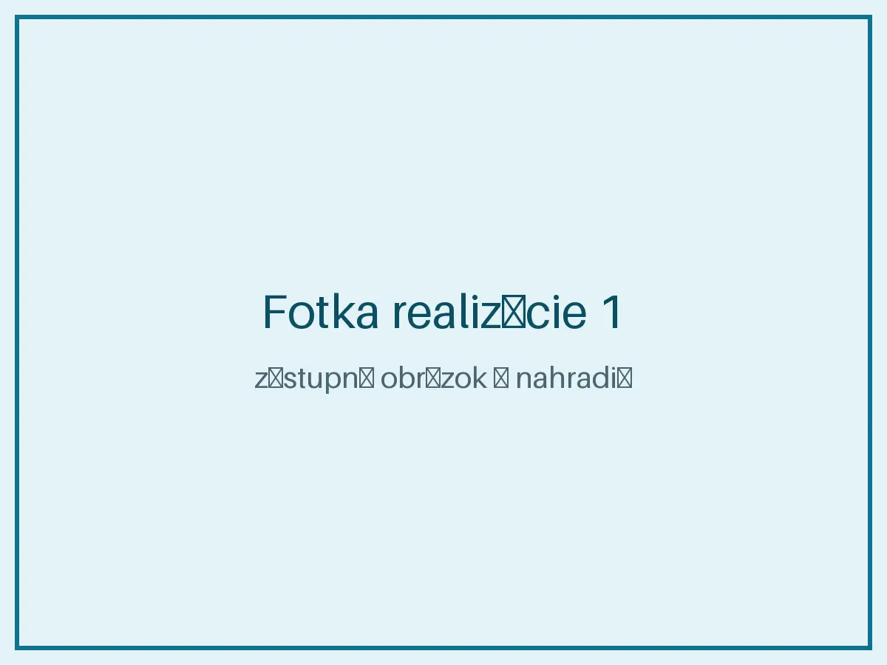
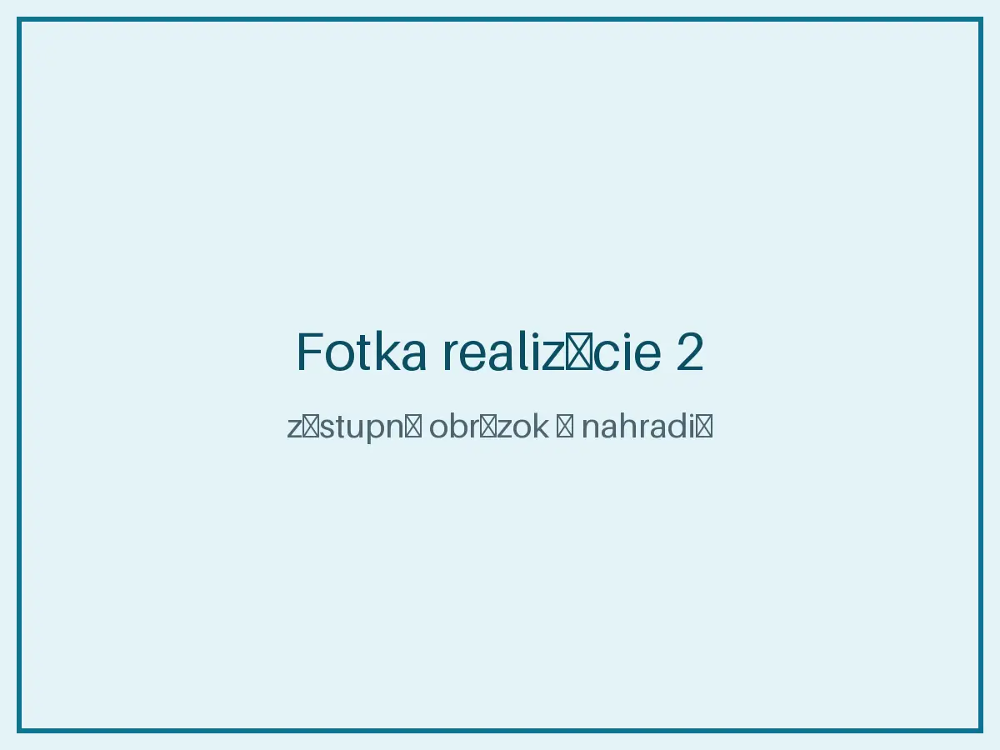
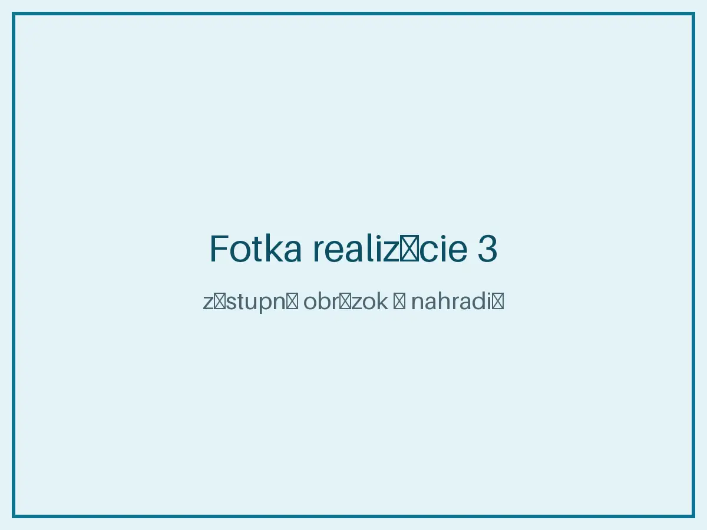
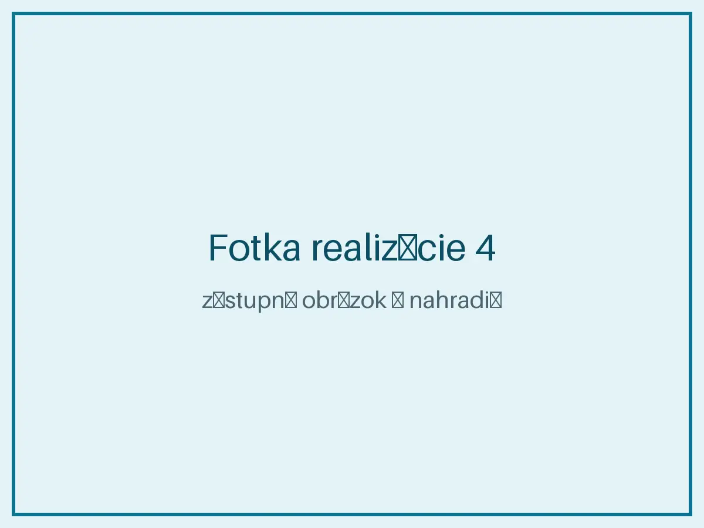
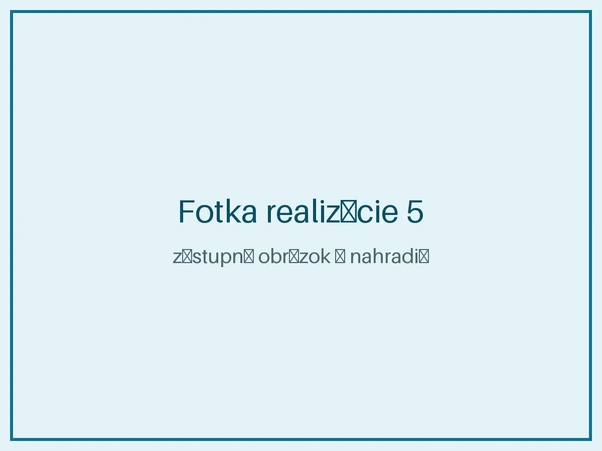
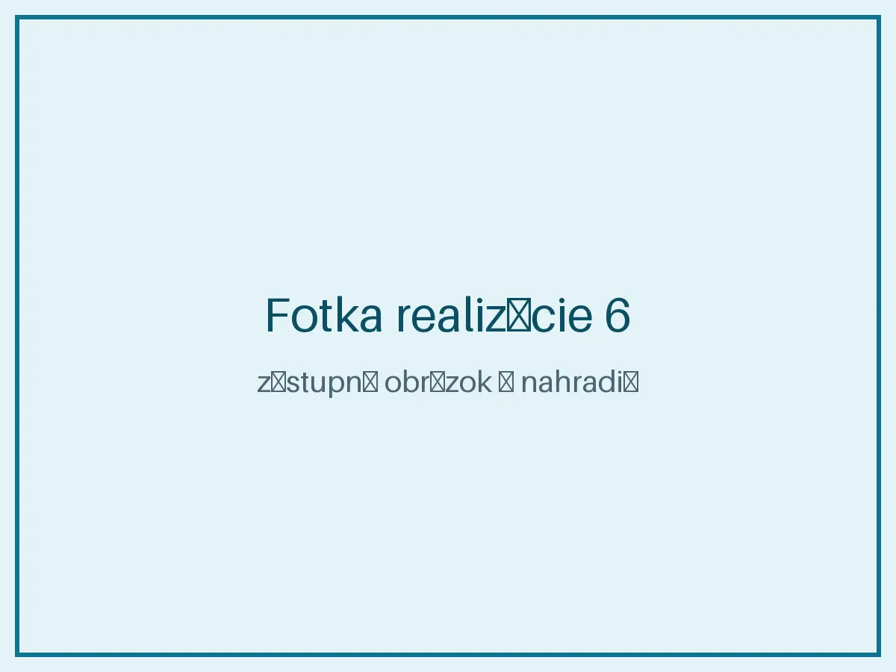

Klimatizácie a tepelné čerpadlá – Košice a celý východ Slovenska
Montáž a servis klimatizácií, tepelných čerpadiel, vzduchotechniky a rekuperácií. Viac ako 25 rokov praxe a certifikát na prácu s chladivami (F-plyny).
- Prax od roku 1999
- Certifikát F-plyny, kategória I
- Člen SZ CHKT
Montáž a servis klimatizácií, tepelných čerpadiel a vzduchotechniky
Montujem nové zariadenia aj servisujem tie, ktoré už máte – v domácnostiach aj vo firmách.
-
Klimatizácie pre domácnosti a firmy
Návrh vhodného zariadenia, montáž klimatizácie a jej pravidelný servis.
- návrh a montáž
- servis, čistenie a dezinfekcia
- kontrola únikov chladiva
-
Tepelné čerpadlá
Montáž nových tepelných čerpadiel aj servis existujúcich zariadení. Pri obhliadke poradím, aké riešenie sa hodí k vášmu domu.
-
Vzduchotechnika
Montáž a servis vzduchotechniky – rozvody vzduchu a vetranie pre domy, kancelárie aj prevádzky.
-
Rekuperácia
Montáž a servis rekuperačných jednotiek. Rekuperácia privádza do domu čerstvý vzduch a využíva pritom teplo z odvádzaného vzduchu.
Prečo práve ja
Montáž klimatizácie alebo tepelného čerpadla je práca na roky. Je dobré vedieť, kto ju robí.
Certifikovaná organizácia na prácu s F-plynmi
Certifikát na prácu s fluórovanými skleníkovými plynmi (chladivami), kategória I, podľa zákona č. 286/2009 Z. z. Vydáva ho Slovenský zväz pre chladenie, klimatizáciu a tepelné čerpadlá (SZ CHKT) a je každoročne obnovovaný od roku 2011. Osobné osvedčenie odborníka na F-plyny č. 1616.
Overiť certifikát v databáze SZ CHKT (otvorí sa v novom okne)-
Prax od roku 1999
Živnosť mám od 1. 2. 1999 – viac ako 25 rokov skúseností s montážou a servisom.
-
Člen SZ CHKT
Som členom Slovenského zväzu pre chladenie, klimatizáciu a tepelné čerpadlá.
-
Montáž aj servis z jednej ruky
Zariadenie navrhnem, namontujem a neskôr ho aj servisujem. Viete, komu zavolať.
-
Flexibilné termíny
Termín prispôsobím vám – po dohode aj mimo bežných pracovných hodín.
-
Celý východ Slovenska
Za zákazníkmi chodím ja – Košice a okolie, Prešov, Poprad, Michalovce aj ďalšie mestá.
Ako to prebieha
Od prvého telefonátu po servis namontovaného zariadenia.
-
Kontakt
Zavolajte alebo napíšte e-mail a stručne popíšte, čo potrebujete – novú montáž, servis alebo čistenie.
-
Obhliadka a návrh
Prídem k vám, pozriem si priestor a navrhnem vhodné zariadenie aj jeho umiestnenie.
-
Cenová ponuka
Dostanete cenovú ponuku podľa navrhnutého riešenia. Rozhodnete sa v pokoji.
-
Montáž a následný servis
Zariadenie odborne namontujem a uvediem do prevádzky. Postarám sa aj o jeho pravidelný servis.
Značky klimatizácií
Najčastejšie montujem klimatizácie značiek LG a Midea. Na želanie zákazníka namontujem aj iné značky, napríklad Samsung alebo Toshiba.
- LG
- Midea
- Samsung
- Toshiba
- a ďalšie na želanie
Kde pôsobím – Košice a východné Slovensko
Za zákazníkmi chodím po celom východnom Slovensku. Najčastejšie pracujem v Košiciach a okolí, rád prídem aj ďalej.
Mestá a okolie
- Košice a okolie
- Prešov
- Poprad
- Spišská Nová Ves
- Kežmarok
- Stará Ľubovňa
- Sabinov
- Bardejov
- Svidník
- Stropkov
- Vranov nad Topľou
- Humenné
- Snina
- Michalovce
- Sobrance
- Trebišov
- Kráľovský Chlmec
- Moldava nad Bodvou
- Gelnica
- Rožňava
Vaša obec nie je v zozname? Zavolajte, určite sa dohodneme.
Realizácie
Ukážky montáží klimatizácií a tepelných čerpadiel.






Kontakt
Potrebujete montáž klimatizácie, tepelné čerpadlo alebo servis? Zavolajte alebo napíšte – dohodneme termín obhliadky.
Oblasť pôsobenia: Košice a okolie, Prešov, Poprad a celý východ Slovenska. Termíny aj mimo bežných hodín po dohode.